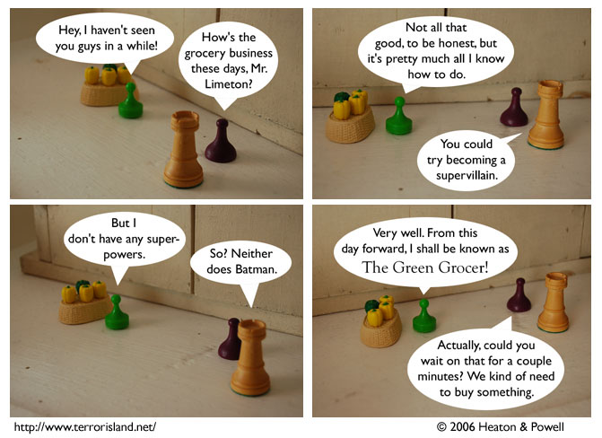

Strip #79
— Wednesday, December 13, 2006
His grocery is losing money because of Internet.
Notes, Thoughts, &c.
Ben’s Notes
I came up with the idea of a supervillain called “The Green Grocer” back in June, while we were working on strip #8. Now that I look back over my records, that was on the same day that we decided on the Czar plotline. We also scripted part of strip #32 that day. And, I suggested a joke about Mark Twain that didn’t turn out to be funny! OK, that last one isn’t very good. But still, several significant future plot points were decided back then, over a pretty short period of time. It was a productive day by my standards.
Lewis’s Notes
Ben’s days count as productive when three decisions get made in one or more conversations.
Wow, I was trying to think of more to say, and I almost nodded off while formulating a sentence. I guess that means I am tired.